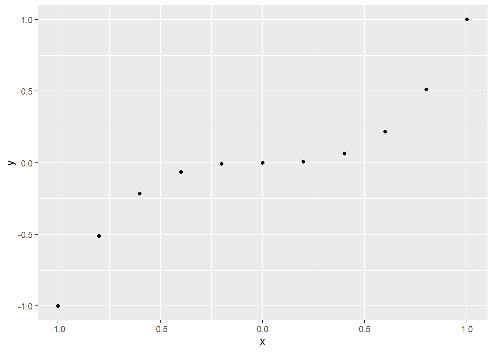

1+1[1] 21+1[1] 2100:130 #The colon operator (:) returns every integer between two integers. It is an easy way to create a sequence of numbers. [1] 100 101 102 103 104 105 106 107 108 109 110 111 112 113 114 115 116 117 118
[20] 119 120 121 122 123 124 125 126 127 128 129 130control +c取消进程
1:6[1] 1 2 3 4 5 6这些生成数字是短暂存在的，我们必须将其赋值到特定对象身上。R lets you save data by storing it inside an R object.
a <- 1
a + 1[1] 2die <- 1:6
die [1] 1 2 3 4 5 6不能以数字为开头
不能使用特殊符号，&*@#%^类似的符号不要使用
注意大小写
name <- 1
Name <- 2
Name + 1[1] 3不要使用已经用过的对象名，r会自动覆盖以前的对象
jerry <- 1
jerry[1] 1jerry <- 2
jerry[1] 2You can see which object names you have already used with the function ls:
ls()[1] "a" "die" "jerry" "name" "Name" You can also see which names you have used by examining RStudio’s environment pane.
r中对象的运算并不是向量乘法，而是向量中的每个对应元素做运算。When R performs element-wise execution, it matches up vectors and then manipulates each pair of elements independently.
die - 1[1] 0 1 2 3 4 5die / 2[1] 0.5 1.0 1.5 2.0 2.5 3.0die * die[1] 1 4 9 16 25 36如果是向量长度不一样的两个对象做运算，r会自动重复补齐长度短的那个
die + 1:2 #整倍数[1] 2 4 4 6 6 8die + 1:4 #非整倍数会出现警告Warning in die + 1:4: longer object length is not a multiple of shorter object
length[1] 2 4 6 8 6 8向量的对应元素运算，保证了同一观测值的数与同一观测值的数相匹配。
die %*% die #内积 [,1]
[1,] 91die %o% die #外乘 [,1] [,2] [,3] [,4] [,5] [,6]
[1,] 1 2 3 4 5 6
[2,] 2 4 6 8 10 12
[3,] 3 6 9 12 15 18
[4,] 4 8 12 16 20 24
[5,] 5 10 15 20 25 30
[6,] 6 12 18 24 30 36R comes with many functions that you can use to do sophisticated tasks like random sampling.
round(3.1415926) #四舍五入[1] 3factorial(3) #阶乘[1] 6mean(1:6) #函数中的参数可以是原始数据[1] 3.5mean(die) #也可以是定义好的对象[1] 3.5round(mean(die)) #甚至可以是运算的函数[1] 4sample(x= 1:4 , size= 2) #无放回抽样[1] 1 4args(round) #查看函数的语法function (x, digits = 0, ...)
NULLsample(die, size = 2, replace = TRUE) #有放回抽样，两个骰子可以投掷出相同的点数[1] 2 6Sampling with replacement is an easy way to create independent random samples. Each value in your sample will be a sample of size one that is independent of the other values. This is the correct way to simulate a pair of dice.
dice <- sample(die, size = 2, replace = TRUE)
dice[1] 5 5sum(dice) #这时dice1的值已经固定，不论你后续对dice做任何操作，它都是5与5组成的一个向量[1] 10dice <- sample(x= 1:6, size = 2, replace=TRUE)
sum(dice) #此时的dice是随机生成的数组[1] 9Every function in R has three basic parts: a name, a body of code, and a set of arguments.
roll <- function() {
die <- 1:6
dice <- sample(die, size = 2, replace = TRUE)
sum(dice)
} #创建一个roll函数，这样就可以简洁执行掷色子并且求和的命令roll() [1] 4函数后面的括号可以看作出发函数发生作用的触发器，加了括号才能完整运行定义后的函数。如果没有加括号，就只能显示函数的具体内容，如下：
rollfunction() {
die <- 1:6
dice <- sample(die, size = 2, replace = TRUE)
sum(dice)
}roll2 <- function(die) {
dice <- sample(die, size = 2, replace = TRUE)
sum(dice)
} #现在我们去掉函数的第一行roll2(1:6)[1] 11roll2(die = 1:6)[1] 11R语言之所以强大的一个重要原因，就是它包含丰富多彩的包，这些包方便我去进行数据分析
# install.packages("ggplot2")
library("ggplot2")
x <- c(-1, -0.8, -0.6, -0.4, -0.2, 0, 0.2, 0.4, 0.6, 0.8, 1)
y <- x^3
qplot(x, y)Warning: `qplot()` was deprecated in ggplot2 3.4.0.
library("ggplot2")
x <- c(1, 2, 2, 2, 3, 3)
qplot(x, binwidth = 1)library("ggplot2")
x2 <- c(1, 1, 1, 1, 1, 2, 2, 2, 2, 3, 3, 4)
qplot(x2, binwidth = 1)library(ggplot2)
rolls <- replicate(10000, roll())
qplot(rolls, binwidth = 1)?sample #查看函数的帮助文档starting httpd help server ... doneIf a function comes in an R package, R won’t be able to find its help page unless the package is loaded.
如果你忘记了某个函数，你可以使用？？加上关键字词进行搜索。